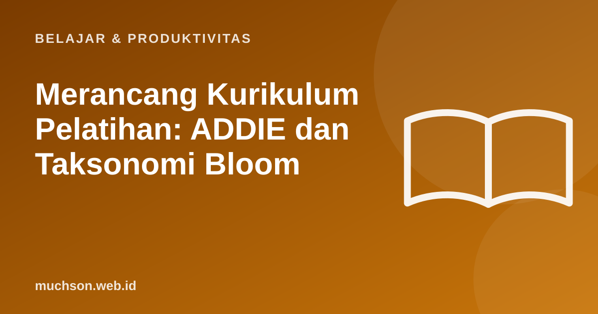

Beranda › Artikel › Belajar & Produktivitas
Belajar & ProduktivitasMerancang Kurikulum Pelatihan: ADDIE dan Taksonomi Bloom
Kurikulum yang baik dimulai dari pertanyaan: setelah selesai, apa yang bisa dilakukan peserta yang sebelumnya tidak bisa? Bukan dari daftar topik yang ingin diajarkan. Dua alat klasik membantu menjawabnya: ADDIE untuk proses, Bloom untuk tujuan.

ADDIE: lima tahap perancangan
| Tahap | Pertanyaan kunci | Hasil |
|---|---|---|
| Analyze | Siapa peserta, apa yang sudah mereka tahu, apa masalah kinerjanya? | Profil peserta dan kesenjangan kemampuan |
| Design | Apa tujuan belajarnya, bagaimana urutan dan penilaiannya? | Tujuan, silabus, rencana penilaian |
| Develop | Materi dan latihan apa yang dibutuhkan? | Modul, latihan, rubrik |
| Implement | Bagaimana pelatihan berjalan dan siapa yang memfasilitasi? | Sesi pelatihan |
| Evaluate | Apakah tujuan tercapai dan apa yang perlu diperbaiki? | Data hasil dan rencana perbaikan |
Taksonomi Bloom: menulis tujuan yang terukur
Prinsip yang menjaga kurikulum tetap hidup
Dengan bantuan AI
AI dapat mempercepat pembuatan draf silabus, soal, dan contoh. Kualitas rancangan tetap bergantung pada pemahaman Anda tentang peserta dan tujuan. Anggap AI sebagai asisten produksi, bukan perancang utama.
Tanya jawab
Apakah ADDIE masih relevan?
Ya, sebagai kerangka proses, sering dipadukan dengan pendekatan yang lebih lincah dan iteratif.
Bagaimana menentukan durasi pelatihan?
Mulai dari tujuan dan latihan yang dibutuhkan, bukan dari jumlah jam yang tersedia. Lalu sesuaikan dengan batasan nyata.
Apakah tujuan belajar harus selalu tertulis?
Ya. Tujuan tertulis memandu materi, penilaian, dan komunikasi dengan peserta.